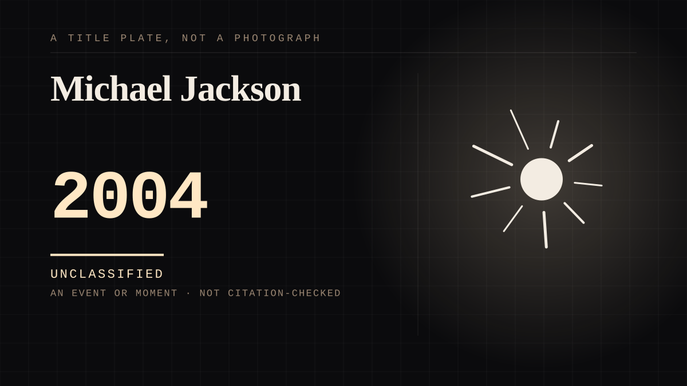

An event or moment · 2004 · Music
Michael Jackson
Public mourning in a way that produced its own genre of documentary and speculation.

The moment grief for a parasocial figure became a media product, with outlets monetising speculation about the death itself. The line between honouring the dead and selling the death is drawn here, and it is not respected here.
Where it sits
2000 2000-2009 · 2004 2009
Provenance · 4 source record(s)
- retrievableFixes the date: Jackson died on Thursday 25 June 2009 at UCLA Medical Center, pronounced dead at 2:26pm, aged 50. Also documents the entry's actual subject from inside the first hours: TMZ reported the death first and CNN confirmed it more than two hours later via the Los Angeles coroner, and the publicist who had served Jackson during the 1991 molestation trial issued a statement to assembled reporters within the first night, describing him as 'impossibly difficult and often self-destructive'. Grief and access arriving as a media product, hours after the news, with no cooling-off period.Grigsby Bates, K. (2009, June 25). Michael Jackson Dead At 50: The Two-Way. NPR. ↗
- retrievableThe investigation that followed, which is what turned the mourning into sustained coverage: the Los Angeles County coroner ruled the death a homicide, finding propofol and lorazepam the primary drugs responsible, with midazolam, diazepam, lidocaine and ephedrine also detected, and cited 'acute propofol intoxication' with 'benzodiazepine effect' as a contributing condition. The full autopsy and toxicology reports were placed on security hold at the request of police and the district attorney, and federal and state agencies opened parallel investigations.Duke, A. (2009, August 28). Michael Jackson's death was a homicide, coroner rules. CNN. ↗
- retrievableThe scene at the house, from a firefighter-paramedic who was there: the ambulance leaving the Holmby Hills home was met, in his words, by 'a circus' - 'Paparazzi... people, tourists. There was even a double-decker tour bus' - and a celebrity bus tour was stopped by emergency personnel on the way out. This is the entry's 'line between honouring the dead and selling the death', witnessed by someone who was working.ABC News (2019, June 13). 'My God, Michael Jackson is dead': The final hours leading up to the pop star's death. ↗
- retrievableLive reporting from the first morning, showing the mechanics the entry describes: speculation about the cause circulating within hours (including a report that he was addicted to Demerol), the coroner saying at 3:51pm that the autopsy would begin 'in minutes' with no definitive results expected for six to eight weeks, and the 1970s-edition of a prime-time documentary being discussed in the same news cycle.Nasaw, D., & Wood, B. (2009, June 26). Michael Jackson dies: worldwide reaction (live). The Guardian. ↗
Not yet stood behind. The entry is real. A person has not read the citation and confirmed it, so treat the date as approximate until they do.
Connected · 2 out, 2 in
Elvis, in a hologram, from Hawaiicame after · 1973 · An event or momentGrieving a person you never metcites · 1970 · A mechanism or tacticElvis, in a hologram, from Hawaiicame before · 1973 · An event or momentKurt Cobaincites · 1994 · An event or moment
It sits in
The full timeline → · The database → · See it in the atlas →